ننجز معاملاتك الحكومية
بدقة وسرعة، وبدون تعب أو انتظار
اختر التصنيف الذي يخصّ معاملتك بالأسفل، واضغط "اقرأ المزيد" لتطّلع على الدليل الكامل لكل خطوة، أو تواصل معنا مباشرة للبدء فورًا.
كل معاملاتك الحكومية في مكان واحد
نظرة سريعة على خدماتنا — اضغط "اقرأ المزيد" على أي خدمة للاطلاع على الدليل الكامل بخطواته وشروطه.
خدمات الزواج
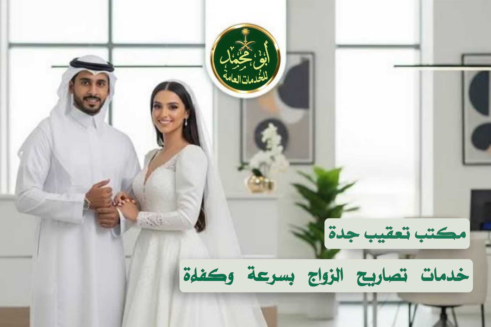
الفرق بين تصريح الزواج برياض وتوثيق الزواج في السعوديةالفرق بين تصريح الزواج برياض وتوثيق الزواج في السعودية
تعرف على الفرق الجوهري بين تصريح الزواج بالرياض وتوثيق عقد الزواج رسمياً وفق الأنظمة السعودية والشروط المطلوبة.
اقرأ المزيد ←زواج السعودي من مغربية 2027: دليل شامل للخطوات والشروط
دليل متكامل يوضح شروط وخطوات ومستندات زواج المواطن السعودي من مقهوية/مغربية بطريقة نظامية ومعتمدة.
اقرأ المزيد ←تصاريح الزواج
استخراج تصريح الزواج للمواطنين والمقيمين وفق الشروط النظامية قبل عقد القران.
اقرأ المزيد ←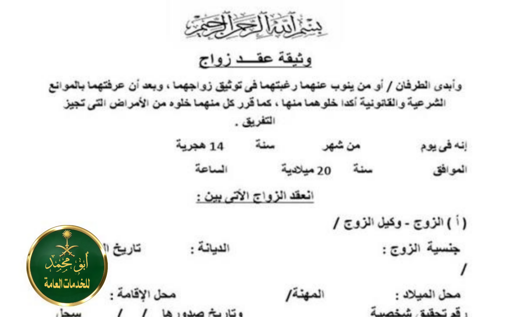
توثيق عقود الزواجتوثيق عقود الزواج
توثيق عقد الزواج رسميًا لدى الجهات المختصة داخل المملكة بعد استخراج التصريح.
اقرأ المزيد ←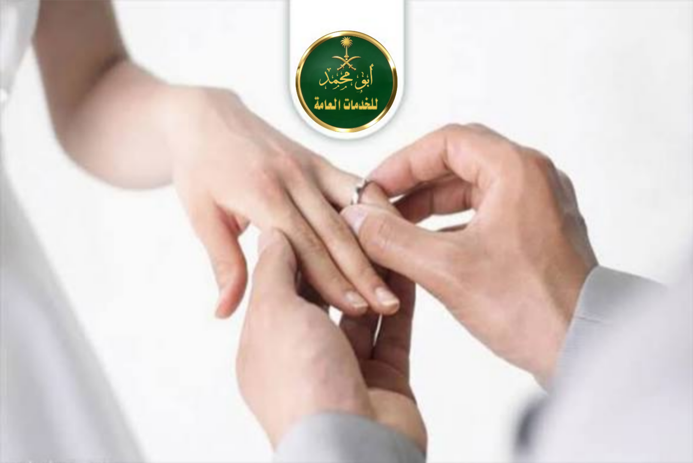
زواج سعودي/ة من أجنبي/ةزواج سعودي/ة من أجنبي/ة
استكمال إجراءات الموافقة على الزواج المختلط ومتابعتها حتى الاعتماد النهائي.
اقرأ المزيد ←توثيق الزواج من الخارج
تصديق عقود الزواج المُبرمة خارج المملكة وإدخالها ضمن السجلات الرسمية.
اقرأ المزيد ←شروط وخطوات استخراج تصريح زواج من وزارة الداخلية
دليل شامل لمعرفة الشروط والمستندات المطلوبة لاستخراج تصريح زواج السعودي من أجنبية عبر القنوات الرسمية.
اقرأ المزيد ←شروط زواج السعودي من مقيمة داخل المملكة
تعرف على الضوابط والاشتراطات الخاصة بزواج المواطن السعودي من امرأة مقيمة إقامة نظامية على أراضي المملكة.
اقرأ المزيد ←إجراءات توثيق زواج سعودي من أجنبية مولودة في المملكة
دليل مبسط يوضح متطلبات وإجراءات زواج المواطن السعودي من مقيمة مولودة داخل أراضي المملكة العربية السعودية.
اقرأ المزيد ←شروط وإجراءات عقد النكاح للأجانب في السعودية 2027
الدليل الشامل لاستيفاء شروط عقد النكاح وإصدار موافقات وتصاريح الزواج للأجانب والمقيمين في المملكة.
اقرأ المزيد ←مدة معاملة تصريح الزواج في السعودية وتسريع الإجراءات
تعرف على الأسباب المؤدية لتأخير معاملة تصريح الزواج والمدة المتوقعة لكل مرحلة خطوة بخطوة.
اقرأ المزيد ←شروط زواج السعودي من مصرية في مصر والدليل الشامل
دليل مبسط وشامل لمعرفة شروط ومتطلبات زواج المواطن السعودي من مصرية وإجراءات استخراج التصريح والعقبات وتجنبها.
اقرأ المزيد ←تصديق عقود السفارات
تصديق وثائق الزواج الصادرة من السفارات والقنصليات لدى الجهات المعنية.
اقرأ المزيد ←حل المعاملات المتعثرة
متابعة ومعالجة معاملات الزواج المتوقفة أو المتعثرة لدى الجهات الحكومية حتى إنجازها.
اقرأ المزيد ←التأشيرات
تأشيرة الزيارة العائلية
استخراج وتجديد وتمديد تأشيرات الزيارة العائلية للأقارب والأزواج.
اقرأ المزيد ←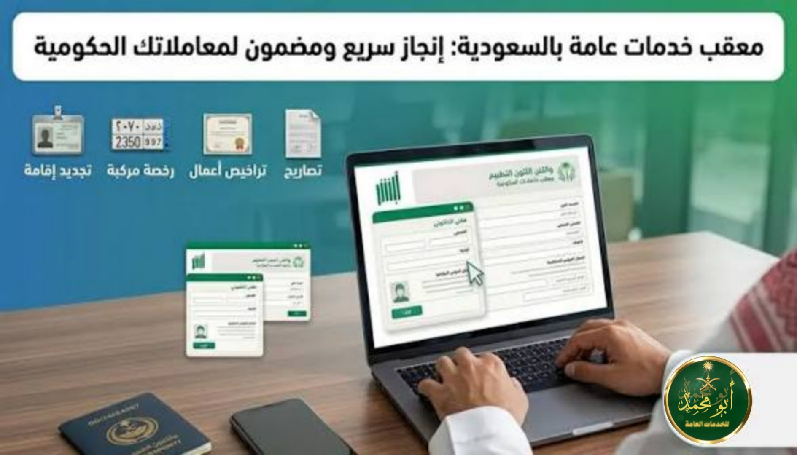
تأشيرة الزيارة التجاريةتأشيرة الزيارة التجارية
إصدار تأشيرات الزيارة لرجال الأعمال والشركاء التجاريين القادمين للمملكة.
اقرأ المزيد ←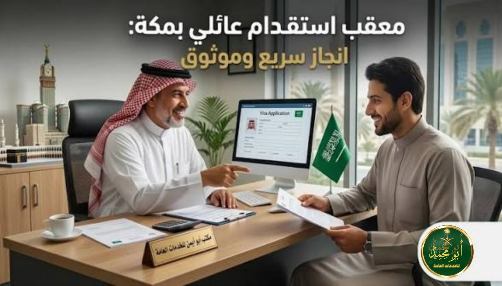
تأشيرات العمل والاستقدامتأشيرات العمل والاستقدام
إصدار تأشيرات العمالة المنزلية والمهنية ومتابعة إجراءات الاستقدام كاملة.
اقرأ المزيد ←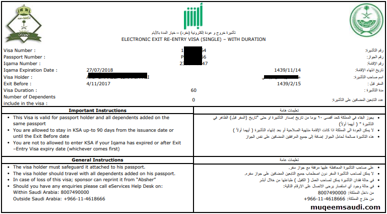
تأشيرة الخروج والعودةتأشيرة الخروج والعودة
إصدار تأشيرات الخروج والعودة (فردي أو متعدد) للمقيمين داخل المملكة.
اقرأ المزيد ←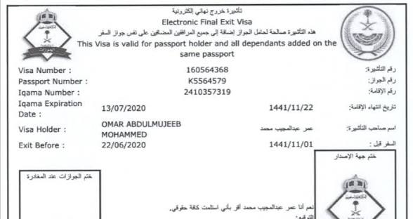
تأشيرة الخروج النهائيتأشيرة الخروج النهائي
إنهاء إجراءات الخروج النهائي للمقيمين بالتنسيق مع الجهات المختصة.
اقرأ المزيد ←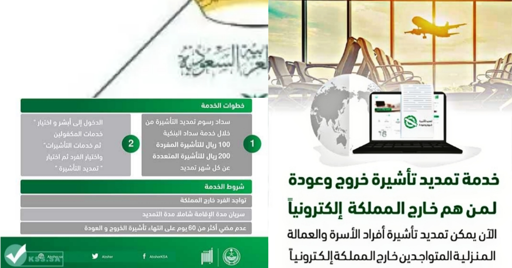
تمديد وتجديد التأشيراتتمديد وتجديد التأشيرات
متابعة تمديد صلاحية التأشيرات المختلفة قبل انتهائها لتفادي أي غرامات.
اقرأ المزيد ←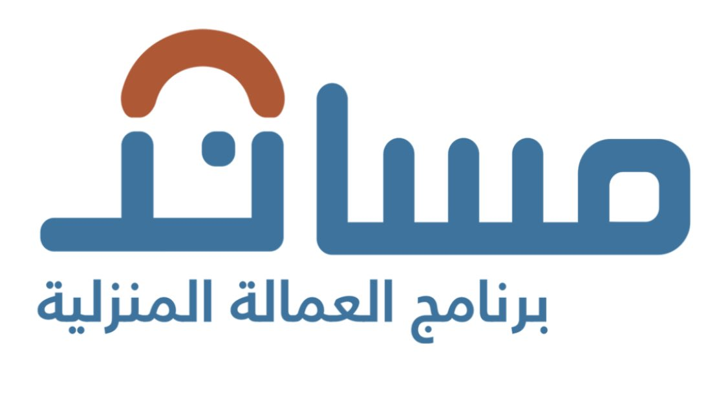
استخراج تأشيرات فردية وعمالة منزلية (مساند ومكتب العمل)استخراج تأشيرات فردية وعمالة منزلية (مساند ومكتب العمل)
إصدار تأشيرات العمالة المنزلية والفردية للمكتفي عبر مساند أو يدوياً من مكتب العمل لجميع الفئات والجنسيات المسموحة.
اقرأ المزيد ←الإقامة والكفالة
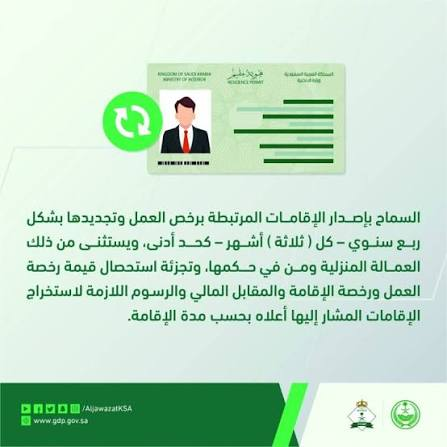
تجديد الإقامةتجديد الإقامة
تجديد الإقامة الفردية والعائلية قبل تاريخ الانتهاء لتفادي المخالفات النظامية.
اقرأ المزيد ←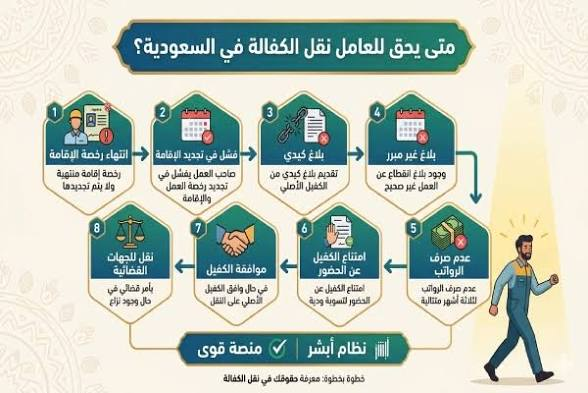
نقل الكفالةنقل الكفالة
إتمام إجراءات نقل الكفالة من كفيل إلى آخر بالكامل ووفق الأنظمة المعتمدة.
اقرأ المزيد ←نقل الخدمات
نقل خدمات العامل أو المرافق إلكترونيًا وفق الأنظمة المعتمدة دون نقل الكفالة كليًا.
اقرأ المزيد ←تعديل المهنة
تعديل المسمى الوظيفي في الإقامة بما يتوافق مع طبيعة العمل الفعلي للمقيم.
اقرأ المزيد ←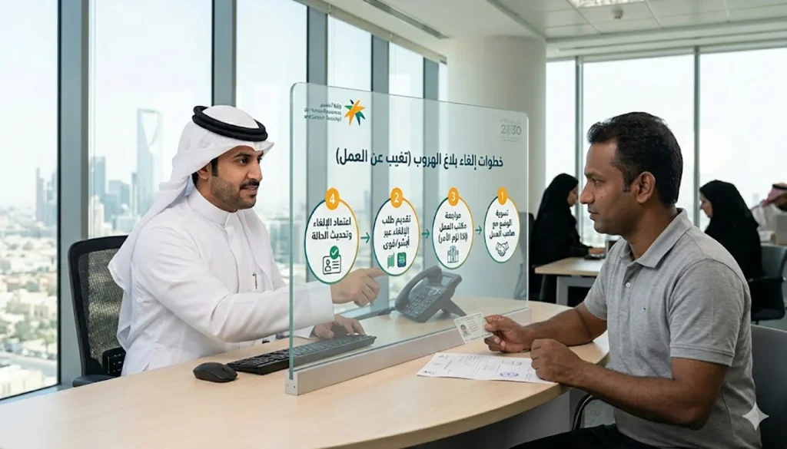
إلغاء بلاغ الهروبإلغاء بلاغ الهروب
تقديم اعتراض وإلغاء بلاغات الهروب بالطرق النظامية الصحيحة ومتابعتها حتى الإلغاء.
اقرأ المزيد ←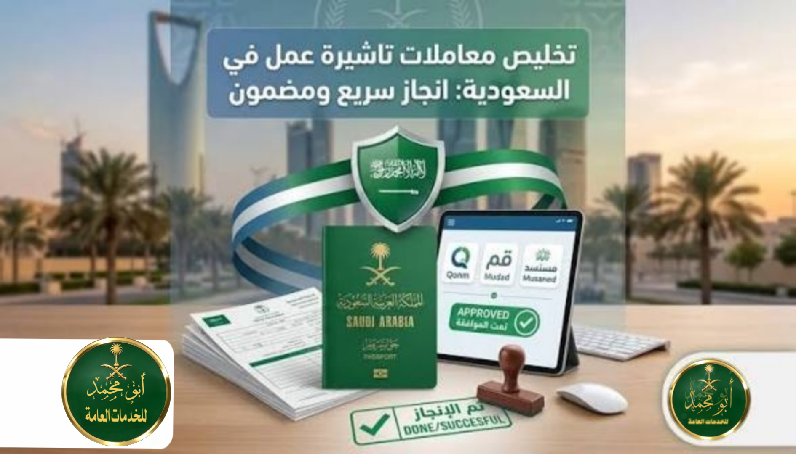
إصدار وتجديد رخص العملإصدار وتجديد رخص العمل
إصدار رخص العمل للمنشآت وتجديدها لدى وزارة الموارد البشرية والتنمية الاجتماعية.
اقرأ المزيد ←إلغاء ملاحظة حماية الأجور ورفع الالتزام إلى 100%
رفع نسبة التزام حماية الأجور في منصة مدد إلى 100% وإزالة ملاحظات الرقم الموحد لإتمام النقل وإصدار التأشيرات فوراً.
اقرأ المزيد ←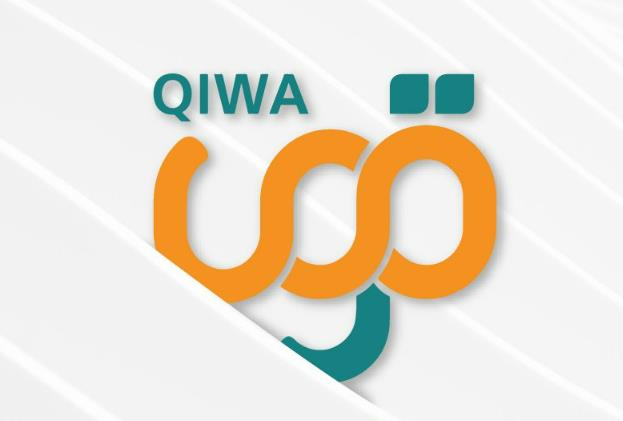
خدمات منصة قوى (فك نسبة النقل، رفع النطاقات، تدبيل الرصيد)خدمات منصة قوى (فك نسبة النقل، رفع النطاقات، تدبيل الرصيد)
خدمات متكاملة في منصة قوى تشمل فك نسبة نقل الكفالة، رفع نطاقات ملفات الأطفال للأخضر، تخفيض كرت العمل، وتدبيل التأشيرات.
اقرأ المزيد ←فك تجميد عضوية الهيئة السعودية للمهندسين (للمهن الفنية)
معالجة وفك تجميد عضوية الهيئة السعودية للمهندسين للعمالة ذات المهن الفنية خلال 3 أيام عمل.
اقرأ المزيد ←خدمات عامة أخرى
تصديق الوثائق الرسمية
تصديق الشهادات والوثائق الرسمية من الجهات الحكومية والسفارات المعتمدة.
اقرأ المزيد ←ترجمة معتمدة
ترجمة المستندات الرسمية بشكل معتمد لتقديمها للجهات الحكومية والسفارات.
اقرأ المزيد ←معاملات الأحوال المدنية
إصدار وتحديث الهوية الوطنية وسجل الأسرة ووثائق الأحوال المدنية المختلفة.
اقرأ المزيد ←معاملات الجوازات
إصدار وتجديد جوازات السفر ومتابعة معاملاتها المختلفة حتى الاستلام.
اقرأ المزيد ←معاملات المرور والمخالفات
الاستعلام عن المخالفات المرورية ومتابعة إجراءات تخفيضها أو الاعتراض عليها.
اقرأ المزيد ←استشارات قانونية عامة
استشارات أولية حول الإجراءات النظامية الصحيحة لكل معاملة قبل البدء بها.
اقرأ المزيد ←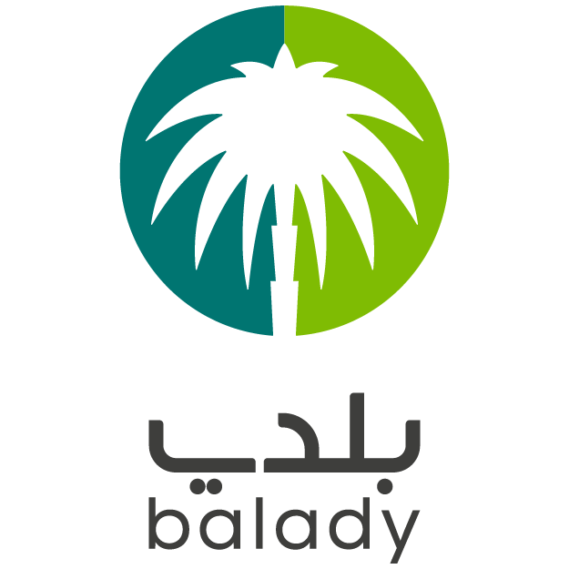
خدمات منصة بلدي (إصدار وتعديل وإلغاء الرخص البلدية)خدمات منصة بلدي (إصدار وتعديل وإلغاء الرخص البلدية)
إصدار رخص البلدية الفورية وغير الفورية مع شهادة السلامة والتقرير الفني، وتعديل ونقل وإلغاء الرخص التجارية.
اقرأ المزيد ←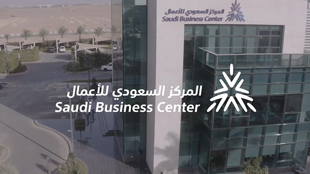
خدمات وزارة التجارة والاستثمار والمركز السعودي للأعمالخدمات وزارة التجارة والاستثمار والمركز السعودي للأعمال
إصدار وتجديد وشطب السجلات التجارية للشركات والمؤسسات، وحجز الأسماء، وشطب السجلات المقيدة بملاحظة تصريح.
اقرأ المزيد ← خدمات المقيم المستثمر وتنزيل الإعفاءات
خدمات المقيم المستثمر وتنزيل الإعفاءات
خدمات المقيم المستثمر وتنزيل الإعفاءات
تنزيل إعفاء المقابل المالي لشركات وعمالة المستثمر، وإنجاز كافة معاملاته في التأمينات والعمل والتجارة وقوى ومدد ومساند.
اقرأ المزيد ←إجابات سريعة على استفساراتك
جاهزون لإنجاز معاملتك اليوم
تواصل مباشرة مع أبو محمد عبر الاتصال أو واتساب، وسنوضح لك كل ما تحتاجه لإتمام معاملتك دون تعقيد.